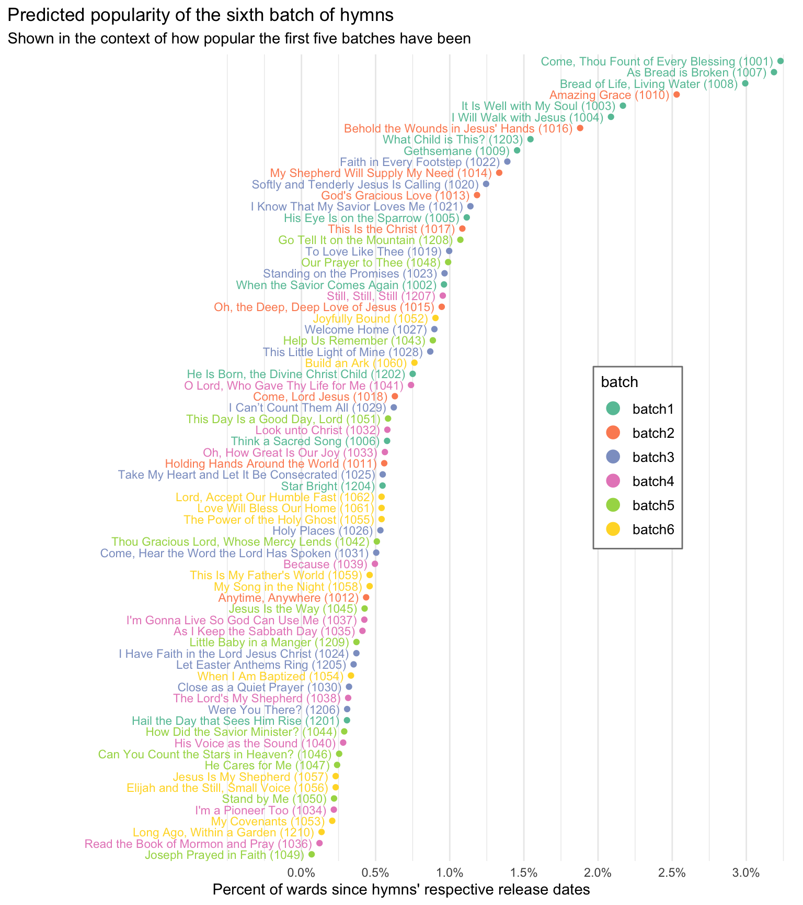

Predicting the popularity of the sixth batch of hymns
general
frequency
new hymns
The sixth batch of hymns came out yesterday! Recently I did a statistical analysis of the first five batches of new hymns so that I could see perhaps what makes a hymn more or less popular. I found that things like whether it’s an SATB arrangement, whether it’s a sacrament hymn, and a few other things correlated with how often a hymn was sung. I’m now in an interesting position to test this out. So, in this post, I take the analysis from the first five batches and use it to make predictions about the sixth batch.
Note
I am planning on keeping this post stagnant until the seventh batch comes out, at which point I will revisit my predictions and see how I did.
1 Revisiting the statistical model
In a previous post, I fit a statistical model to the first five batches. Specifically, I looked at what proportion of sacrament meetings each hymns was sung in since its respective release date. To help explain/predict that number, I had the model account for the following variables:
- what batch it’s in
- whether it’s arranged in SATB or in unison
- whether it’s a sacrament hymn
- whether it’s a Christmas hymn
- whether it’s an Easter hymn
- whether it has some “flow” like interludes, DS al Codas, or special endings
- whether it has been previously appeared in an LDS publication
- whether it’s an African American spiritual
- whether it’s a translation of a hymn in another language’s hymnal
- whether it’s otherwise an existing Christian hymn
I found that the batch was the strongest strong predictor. Other strong factors were whether it’s a sacrament hymn, whether it’s arranged in SATB format, and whether it’s an Easter hymn, whether it has already appeared in a Latter-day Saint publication. So, let’s see what that means for the sixth batch.
2 Coding the sixth batch of hymns
Here are the sixth batch of hymns and how I coded them. I’ll assume the most common configuration of properties (SATB, non-sacrament, non-Christmas, non-Easter, no special flow, not previously published, not an African American spiritual, not a translation, and not an otherwise existing Christian hymn) and will mention it only if it deviates from that.
Joyfully Bound (#1052) : This hymn is tagged as a sacrament hymn.My Covenants (#1053) : This is not an SATB arrangement and has a non-traditional flow. While it was originally written in Swedish, it hasn’t previously appeared in the Swedish hymnal, so I haven’t tagged as being a new translation an existing hymn.When I Am Baptized (#1054) : This is not an SATB arrangement and already existed in the Children’s Songbook.The Power of the Holy Ghost (#1055) : This is coded for all default properties.Elijah and the Still, Small Voice (#1056) : This not an SATB arrangement.Jesus Is My Shepherd (#1057) : This is not an SATB arrangement and has a non-traditional flow.My Song in the Night (#1058) : The text and tune of this hymn was borrowed from already-existing non–Latter-day Saint sources.This Is My Father’s World (#1059) : The text and tune of this hymn was borrowed from already-existing non–Latter-day Saint sources.Build an Ark (#1060) : This is not an SATB arrangement, has a non-traditional flow, and was previously published in the September 2010 issue of the Friend.Love Will Bless Our Home (#1061) : This is coded for all default properties.Lord, Accept Our Humble Fast (#1062) : This is coded for all default properties.Long Ago, Within a Garden (#1210) : This is an Easter hymn.
3 Predictions for the sixth batch
So, what I’ve done is take this information about each hymn and used the model to make predictions about how popular each hymn will be. The result is this plot here. This plot shows the actual rate of frequency of the first five batches of hymns in sacrament meetings, after accounting for when they came out. Interspersed in yellow are the sixth batch hymns.
The sixth batch hymns are spread out over the bottom half of the plot. The hymn that is predicted to be most common is
The next most popular hymn is predicted to be
Next, we have
Close to the bottom we have
Finally, we have
Here is a summary of how popular I suspect the sixth batch hymns will be.
| Predicted percent of sacrament meetings each hymn from the 6th batch of hymns will be sung in between their release and when the 7th batch comes out | |
| Predictions are made February 27th based on frequency information for the first five batches of hymns. | |
| hymn | percent of sacrament meetings |
|---|---|
| Joyfully Bound (1052) | 0.90% |
| Build an Ark (1060) | 0.76% |
| The Power of the Holy Ghost (1055) | 0.54% |
| Love Will Bless Our Home (1061) | 0.54% |
| Lord, Accept Our Humble Fast (1062) | 0.54% |
| My Song in the Night (1058) | 0.46% |
| This Is My Father's World (1059) | 0.46% |
| When I Am Baptized (1054) | 0.33% |
| Elijah and the Still, Small Voice (1056) | 0.23% |
| Jesus Is My Shepherd (1057) | 0.23% |
| My Covenants (1053) | 0.21% |
| Long Ago, Within a Garden (1210) | 0.14% |
| For context, the most popular new hymns range between 1% and 3% of sacrament meetings. | |
Note
An important caveat is that all of these hymns come from the sixth batch which is a variable that the previous model hasn’t encountered. If the trend continues, where each batch is less popular than the one before it, we may see that these numbers are inflated estimates and the hymns may in fact be even less popular.
The cool thing about this prediction is that surely my guesses will be off. That means that there are idiosyncratic things about each hymn that was not accounted for in the model. Sometimes people just like certain hymns and don’t like others. The ones that show up right next to each other in the plot I think serve as interesting mini case studies because the actual numbers will diverge from these predicted values, which makes them useful points of comparison with each other and may help me figure out what those hidden predictor variables are.
4 Conclusion
In this post, I have taken frequency data from the first five batches to make predictions about the popularity of the sixth batch of hymns. The statistics suggest that